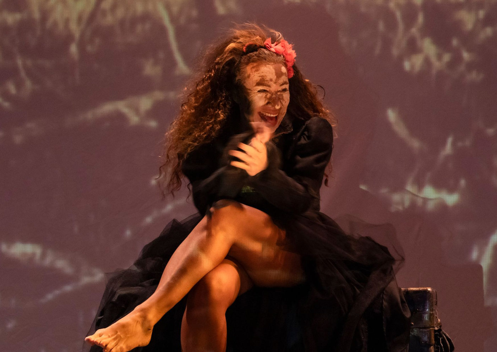

Ester Laccava retorna aos palcos com A Árvore Seca, monólogo indicado ao Prêmio Shell

Espetáculo da trilogia Grito de Mulher estreia temporada gratuita no Teatro Alfredo Mesquita
A atriz Ester Laccava volta em cartaz com o aclamado monólogo "A Árvore Seca", que lhe rendeu sua quarta indicação ao Prêmio Shell. A peça, que integra a trilogia "Grito de Mulher", estreia no dia 21 de março, com apresentações gratuitas no Teatro Alfredo Mesquita, em Santana, São Paulo, até 13 de abril.
Com um texto poético baseado na literatura de cordel, o espetáculo narra a emocionante trajetória de uma mulher sertaneja que, apesar da infertilidade, encontra felicidade nos pequenos momentos da vida. O enredo mescla realidade e ficção, intercalando a jornada da protagonista com depoimentos autobiográficos da própria atriz.
"O sertão do ser humano não tem ponte. É universal. Os sentimentos básicos – medo, alegria, desejo, raiva, tristeza – são identificados de maneira muito parecida em toda a humanidade." – Ester Laccava
🎭 A peça já foi apresentada na Alemanha, Portugal e diversas cidades do Brasil, incluindo espaços inusitados como um caiçara no litoral norte de São Paulo e até uma boate em Passa Quatro, Minas Gerais.
A trajetória de A Árvore Seca
O projeto teve início em 2005, quando Ester Laccava encomendou um monólogo ao cordelista Alexandre Sansão, com a ideia de retratar uma velha no sertão. A dramaturgia ganhou forma com a colaboração dos diretores Leandro Goddinho e Antonio Vanfill, que ajudaram a transformar o texto em uma peça intensa e sensível.
"Durante os ensaios, A Árvore Seca se tornou um rio onde me deixo mergulhar sem medo. O espetáculo me permitiu ir e vir dentro de mim mesma, me redescobrindo a cada instante." – Ester Laccava
Após sua estreia, o monólogo percorreu diversos festivais e teatros internacionais, sendo apresentado no Theater Einstein, na Alemanha, no Festival de Valongo, em Portugal, além de espaços alternativos no Brasil.
Sobre a trilogia Grito de Mulher
A Árvore Seca é a segunda peça da trilogia "Grito de Mulher", projeto que discute questões femininas e a resiliência das mulheres. A dramaturgia explora temas como força, dor e superação, trazendo à tona reflexões sobre a condição feminina ao longo da história.
SERVIÇO – A Árvore Seca
📍 Local: Teatro Alfredo Mesquita
📌 Endereço: Av. Santos Dumont, 1770 – Santana, São Paulo/SP
🎭 Duração: 50 minutos
🔞 Classificação indicativa: 12 anos
🎟 Entrada gratuita
📅 Temporada: 21 de março a 13 de abril de 2025
⏰ Horários:
✔ Sextas e sábados: 20h
✔ Domingos: 19h
🎭 Ensaio aberto: 20 de março, às 20h
🎟 Capacidade: 198 lugares